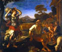

Linen
used as painting support (1500s)
The immense size of the Castiglione painting is made possible by the canvas support. Prior to the 1500s most paintings were made on wooden panels. It was first used in Flanders as early as the 1400s, and slowly worked its way south to Italy. Wooden panels had to be quite thick to prevent warping, and were very expensive due to the limited availability of old-growth timber in Europe. Lightweight canvas also made paintings easier to move over long distances. This is the case of Castiglione's The Immaculate Conception, which was moved from Rome to Osimo.


Giovanni Francesco Barbieri
(Guercino)
Erminia and the Shepherds
About 1648 -1649
Oil on canvas
H.93-1/2 x W.112 in.
The William Hood Dunwoody Fund
Erminia and the Shepherds is another example of a large-scale
17th-century painting in the collection of The Minneapolis Institute
of Arts.